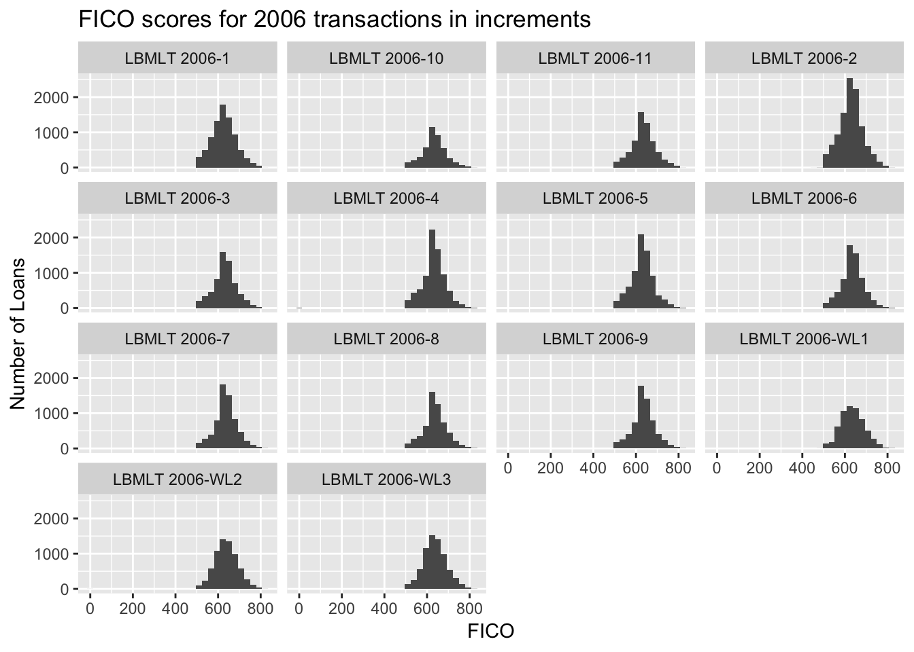
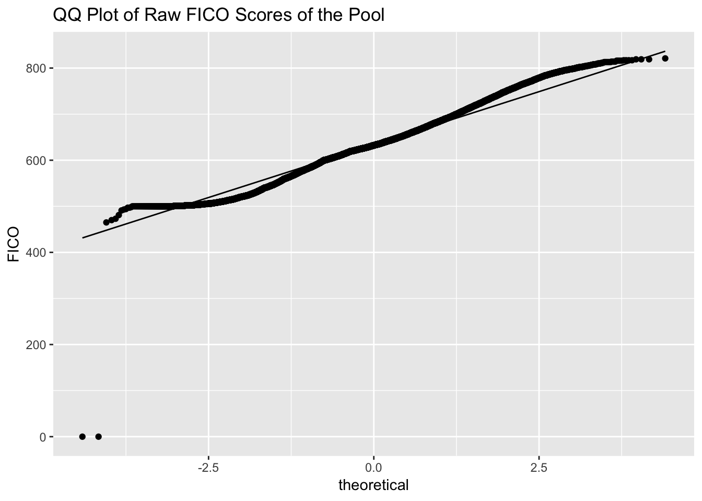
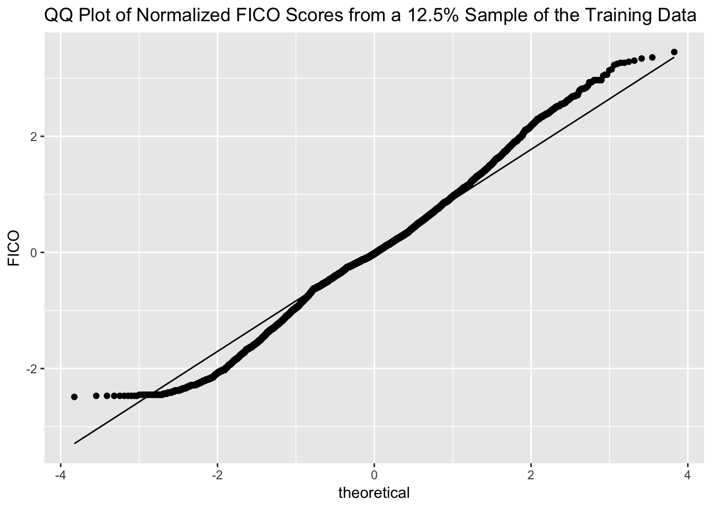
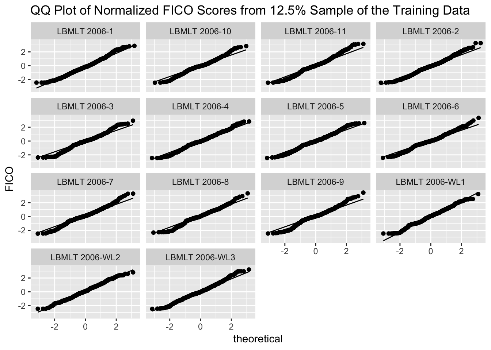
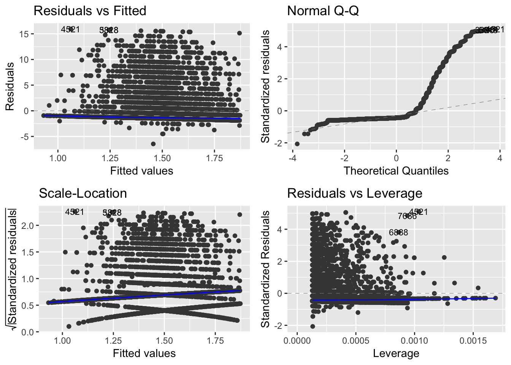
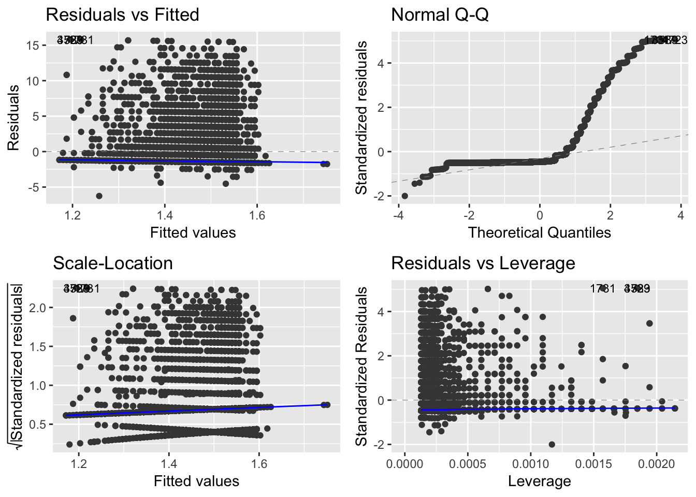
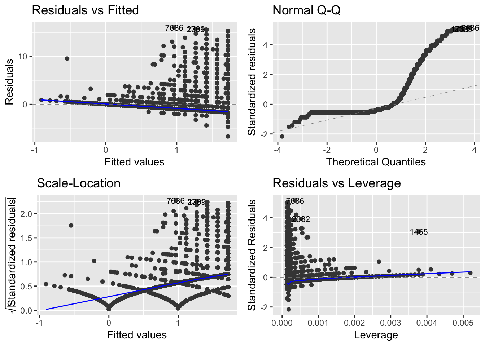
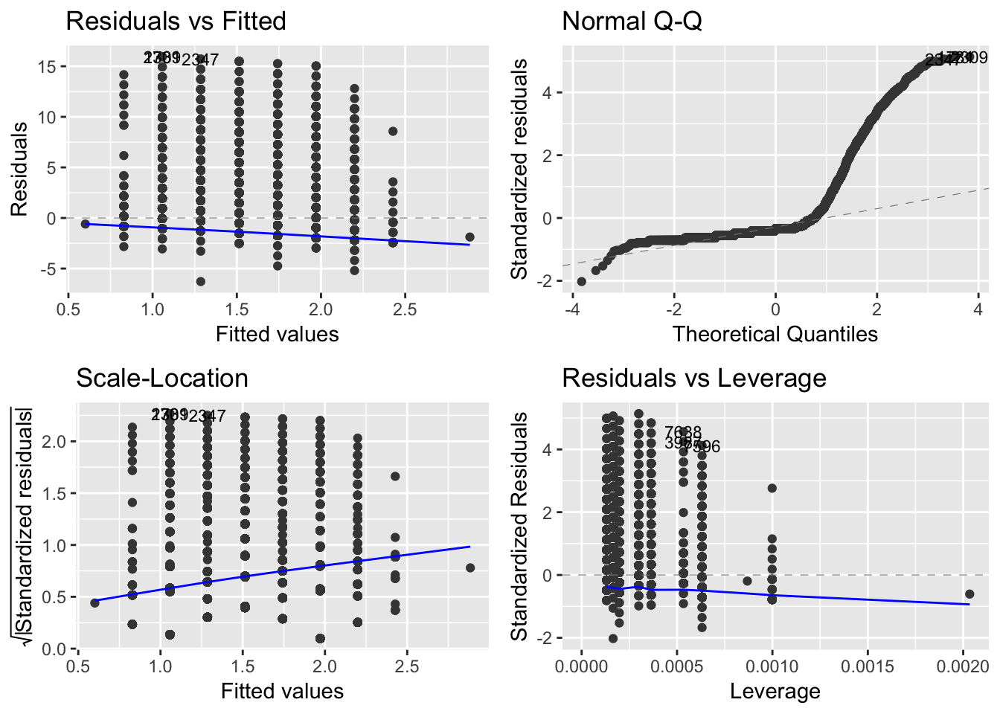

3 The subprime mortgage crisis unfolds in early 2007, part 1
Keywords: large database, MySQL, Python, data wrangling, exploratory data analysis, data mining, linear regression, normality of residuals
3.1 Case Description
Washington Mutual Bank originated subprime loans as one of its home loan mortgage types. The term subprime has always been hard to pin down precisely. Generally, though, they represented higher-interest rate loans to less creditworthy borrowers. In competition with other lenders, the risk types, such as the borrower’s debt-to-income ratio, the combined loan-to-value ratio (considering both the first and any second lien loan), the level of income and asset verification, and the purpose of the loan began to become layered. That is, the cumulative risk increased. And too much reliance, perhaps, was being placed on ever-increasing home values.
In early 2007, a marketing specialist from Washington Mutual Bank’s Wall Street subsidiary, called me to say that investors were complaining about the performance of our subprime securities issued in 2006. I was the principal lawyer in-house dealing with mortgage backed securities, and he wanted to know what kinds of written materials he could provide to investors.
I had some questions that had no ready answers:
- How did our pools of mortgage loans differ?
- What do we mean by performance?
We could begin, I suggested, by looking at the tape for the January 2006 deal to see how the origination characteristics differed from competing deals. We could also pull the monthly report that showed last payment date, delinquency status and other data. He said that he’d try to get that together, but it wasn’t really his job.
This is the case that Donald Rumsfelt (known knowns, known unknowns and unknown unknowns) missed: unknown knowns, information we had that was scattered throughout the organization.
It became apparent that I wasn’t going to get any help dealing with my rising sense of unease that the company faced potential liabilities as a result of these transactions. I was senior enough to set my own priorities so I decided to assemble the data to see what I could make of it.
3.2 Lessons Learned
Successes included data wrangling, learning how to build, query and modify SQL tables, picking up enough R and Python to do some useful descriptive work and exploratory data analysis and realizing that tens of thousands of high-dimensional records are no piece of cake.
Abysmal failures included first and foremost complete ignorance of when you should not apply linear or logistic regression, which is the subject of this part 1.
3.3 Data Wrangling
3.3.1 The pool dataset
When the problem landed on my desk in early 2007, I had access to the origination characteristics and delinquency history of the pool of loans remaining at the beginning of 2006.
The table with all the $25 billion in mortgage loans securitized in 2006:
+----------+-------------+
| count(*) | sum(obal) |
+----------+-------------+
| 124645 | 25542466576 |
+----------+-------------+During 2006, however, the pool shrank to
+----------+-------------+
| count(*) | sum(obal) |
+----------+-------------+
| 96271 | 19148472600 |
+----------+-------------+This diminished pool, as it existed as of the last date in early 2007 for which I had data, I will refer to as the pool. Here is its layout.
MariaDB [dlf]> describe y7;
+----------+---------------+------+-----+---------+-------+
| Field | Type | Null | Key | Default | Extra |
+----------+---------------+------+-----+---------+-------+
| city | varchar(25) | YES | | NULL | |
| cltv | decimal(10,0) | YES | | NULL | |
| ctapeno | decimal(10,0) | YES | | NULL | |
| deal | varchar(25) | YES | | NULL | |
| down | int(11) | YES | | NULL | |
| dti | decimal(10,0) | YES | | NULL | |
| dtype | varchar(25) | YES | | NULL | |
| ebal | decimal(10,0) | YES | | NULL | |
| fico | decimal(10,0) | YES | | NULL | |
| fpd | date | YES | | NULL | |
| gainloss | decimal(10,0) | YES | | NULL | |
| grade | varchar(5) | YES | | NULL | |
| irate | decimal(10,0) | YES | | NULL | |
| issuer | varchar(10) | YES | | NULL | |
| lat | decimal(10,0) | YES | | NULL | |
| lien | int(11) | YES | | NULL | |
| liq | decimal(10,0) | YES | | NULL | |
| lng | decimal(10,0) | YES | | NULL | |
| lstatus | int(11) | YES | | NULL | |
| ltype | varchar(25) | YES | | NULL | |
| margin | decimal(10,0) | YES | | NULL | |
| metro | varchar(25) | YES | | NULL | |
| nrate | decimal(10,0) | YES | | NULL | |
| obal | decimal(10,0) | YES | | NULL | |
| odate | date | YES | | NULL | |
| oltv | decimal(10,0) | YES | | NULL | |
| orate | decimal(10,0) | YES | | NULL | |
| oterm | int(11) | YES | | NULL | |
| payments | int(11) | YES | | NULL | |
| pmiflag | int(11) | YES | | NULL | |
| pocode | int(11) | YES | | NULL | |
| pod | date | YES | | NULL | |
| ppp | int(11) | YES | | NULL | |
| ptd | date | YES | | NULL | |
| purpose | varchar(25) | YES | | NULL | |
| remit | decimal(10,0) | YES | | NULL | |
| sbal | decimal(10,0) | YES | | NULL | |
| servno | decimal(10,0) | YES | | NULL | |
| sint | decimal(10,0) | YES | | NULL | |
| sprin | decimal(10,0) | YES | | NULL | |
| spymt | decimal(10,0) | YES | | NULL | |
| st | varchar(4) | YES | | NULL | |
| zip | int(11) | YES | | NULL | |
| otype | varchar(25) | YES | | NULL | |
| rdate | date | YES | | NULL | |
| ptype | varchar(15) | YES | | NULL | |
| dptd | int(7) | YES | | NULL | |
| dfpd | int(7) | YES | | NULL | |
+----------+---------------+------+-----+---------+-------+
48 rows in set (0.00 sec)Some new fields will be important. As of the end of the first quarter 2007 down is the number of months that a loan has been delinquent. A value of down greater than 3 generally indicates a loan in foreclosure or a loan that has been foreclosed and is in the process of being sold.
Fortunately the origination tapes, while wrapped in HTML, were tagged with
<pre>payload</pre> pairs, making their extraction easy. One of the typical tasks was converting dates into ISO form – from 3/6/2006, say, to 2006-03-06, for which I turned to Python.
"""
function to convert dates into date objects
"""
from datetime import datetime
import re
def canonize_date(slashdate):
"""convert date strings from 3/1/2009 to 2009-03-01"""
dateString = re.compile(r'(\d{1,2})/(\d{1,2})/(\d{4})') # match 3/1/2009
dash = '-'
parts = dateString.search(slashdate).groups()
composed = parts[-1] + dash + parts[-3] + dash + parts[-2]
return composed
def make_date(entry):
"""
Convert string in form 2011-10-25 to a date object
"""
return datetime.date(datetime.strptime(entry, "%Y-%m-%d"))
The performance data was available only in spreadsheet form, by month and transaction, which also required considerable scrubbing to bring into the database. I combined them into a single file, used a supplemental zipcode lookup table to identify the metropolitan area (for possible use with the Case Shiller Index of Home Prices).
3.4 Preliminary analysis, based on FICO scores, using linear regression
3.4.1 FICO’s importance
In 1995, Freddie Mac advised lenders that it had found that consumer credit scores developed by Fair, Issac and Company, Inc. (FICO scores) strongly predicted the likelihood of default on mortgage loans. Freddie Mac’s communication is reproduced as Attachment 2 in testimony before the U.S. House Committee on Oversight and Government Reform, the [Pinto testimony], beginning at page 28 of the pdf.
A traditional description of the limitations of credit score is similar to the following:
Third-party credit reporting organizations provide credit scores as an aid to lenders in evaluating the creditworthiness of borrowers. Although different credit reporting organizations use different methodologies, higher credit scores indicate greater creditworthiness. Credit scores do not necessarily correspond to the probability of default over the life of the related mortgage loan because they reflect past credit history, rather than an assessment of future payment performance. In addition, the credit scores shown were collected from a variety of sources over a period of weeks, months or longer, and the credit scores do not necessarily reflect the credit scores that would be reported as of the date of this prospectus supplement. Credit scores also only indicate general consumer creditworthiness, and credit scores are not intended to specifically apply to mortgage debt. Therefore, credit scores should not be considered as an accurate predictor of the likelihood of repayment of the related mortgage loans.
(From a 2002 transaction.)
The rating agencies and buyers involved in residential mortgage backed securities, however, attached considerable importance to credit scores, generically referred to as FICOs. Therefore, the FICO composition was an obvious starting point.

3.4.2 Performance outcome measure
Down is the number of missed payments as of the latest date. If a borrower misses three consequtive payments, foreclosure is triggered, which may be a relatively quick process in states that do not require a court proceeding or relatively lengthy in those that do. It is what we are trying to predict with the data at hand. It will be the dependent variable.
3.4.3 FICO scores in the pool
FICO scores have a minimum value of 300, and a maximum value of 850. Foreign borrowers have a FICO score of 0. The summary statistics are:
## Min. 1st Qu. Median Mean 3rd Qu. Max.
## 465.0 603.0 632.0 633.6 665.0 821.0and the mode is 620. The pool included two loans with FICO scores of 0, indicating that they were foreign buyers.
Sixteen other loans had scores below 500:
| deal | down | fico | dti | cltv | obal | orate | fpd |
|---|---|---|---|---|---|---|---|
| LBMLT 2006-WL1 | 0 | 497 | 32 | 100 | 58,000 | 9 | 2005-06-01 |
| LBMLT 2006-WL1 | 0 | 494 | 51 | 80 | 52,800 | 10 | 2005-10-01 |
| LBMLT 2006-WL1 | 1 | 473 | 29 | 43 | 50,000 | 9 | 2005-10-01 |
| LBMLT 2006-WL1 | 0 | 497 | 51 | 80 | 388,000 | 8 | 2005-06-01 |
| LBMLT 2006-WL3 | 1 | 498 | 52 | 100 | 67,500 | 10 | 2005-11-01 |
| LBMLT 2006-2 | 0 | 470 | 33 | 80 | 327,975 | 8 | 2005-09-01 |
| LBMLT 2006-2 | 2 | 481 | 42 | 77 | 195,194 | 8 | 2005-11-01 |
| LBMLT 2006-2 | 0 | 493 | 39 | 80 | 148,000 | 10 | 2006-01-01 |
| LBMLT 2006-2 | 0 | 491 | 37 | 95 | 142,500 | 9 | 2005-07-01 |
| LBMLT 2006-2 | 0 | 465 | 39 | 75 | 93,750 | 8 | 2005-07-01 |
The cliffs around 500 (below which only the small number of loans in the tables above are included), 600, 630 and 635 represent the cumulative segmentation of the pools to obtain favorable ratings. Not all deals followed this approach, however.

The variability among transactions suggest that if FICO scores have an influence on default rates, it may be necessary to stratify of otherwise transform the data to obtain useful results.
3.4.4 The FICO scores are not normally distributed

As a group, FICO scores have fat tails, a trait that is present in each of the deals to some degree. There are more loans with very low FICO scores than you would expect if score were randomly distributed plus more loans with high score. We also see a dip in the 500-600 range (loans that may only have been originated due to compensating factors), which are fewer than the sub-500 FICO loans.
An approximately 12% random sample with replacement of normalized scores shows a similar pattern.

With variations, all the deals in the sample of normalized FICO scores have similiar distributions.

A candidate variable that is not normally distributed, even when sampled, raises a red flag. Can it be used as part of a regression model? Let’s find out.
3.4.5 None of the quantitative variables can be used in linear regression for the pool as a whole
fico.sam.mod <- lm(down ~ fico, data = sam)
library(ggfortify)
autoplot(fico.sam.mod, label.size = 3)
The diagnostic on the upper right corner shows the distribution of the residuals (differences between the data point and the best fit line) compared to the expected difference, represented by the dashed line, a normal distribution.
This eliminates fico as a candidate independent variable in any ordinary least square linear regression model.
We see the same problem with the debt-to-income ratio, dti,

combined loan-to-value ratio, cltv,

original balance, obal,
original rate, orate,

and all the quantitative variables taken together
In the following section, we turn to logistic regression, which relaxes the assumption of normality of residuals.